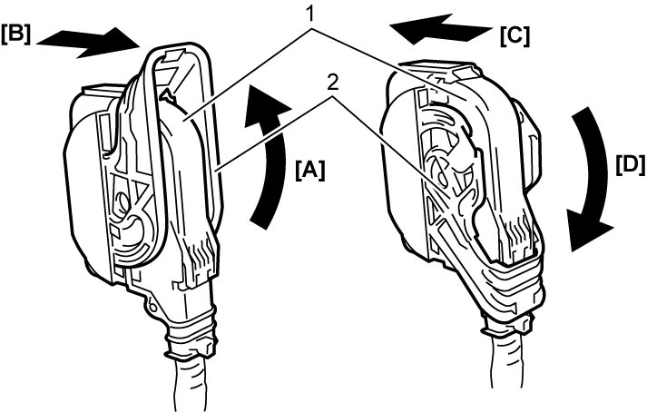

4F
| Precautions for Diagnosing Trouble |
To check that the trouble diagnosis is done accurately and smoothly, observe the following and follow ESP® System Check.
•Before using SUZUKI scan tool, read its Operator’s Manual to know how to use it.
•If the vehicle was operated in any of the following conditions, ABS warning light and ESP® warning light may light momentarily but this does not indicate any fault in ESP® system.
•When disconnecting ESP® control module connector (1), pull up the lock lever (2) of connector.
When connecting the connector, set the connector in position on ESP® hydraulic unit / control module assembly and pull down the lock lever (2) until it locks.

•Communication of ESP® control module and other control module is established by CAN.
Therefore, read Precautions for Installing Mobile Communication Equipment before inspection and handling CAN communication line.
•If the vehicle was operated in any of the following conditions, ABS warning light and ESP® warning light may light momentarily but this does not indicate any fault in ESP® system.
—The vehicle is driven with parking brake applied.
—The vehicle is driven with brake dragging.
—The vehicle is stuck in mud, sand, etc.
—Wheel spins while driving.
—Wheels are rotated while the vehicle is jacked up.
•Follow trouble diagnosis procedure described in ESP® System Check. If trouble diagnosis procedure is not followed properly, incorrect diagnosis may result. (If incorrect procedure is performed, other DTC may be stored in the ESP® hydraulic unit / control module assembly.)—The vehicle is driven with brake dragging.
—The vehicle is stuck in mud, sand, etc.
—Wheel spins while driving.
—Wheels are rotated while the vehicle is jacked up.
•When disconnecting ESP® control module connector (1), pull up the lock lever (2) of connector.
When connecting the connector, set the connector in position on ESP® hydraulic unit / control module assembly and pull down the lock lever (2) until it locks.

 "Expand image")
| [A]: | Pull up to unlock | [C]: | Connect |
| [B]: | Disconnect | [D]: | Pull down to lock |
Therefore, read Precautions for Installing Mobile Communication Equipment before inspection and handling CAN communication line.